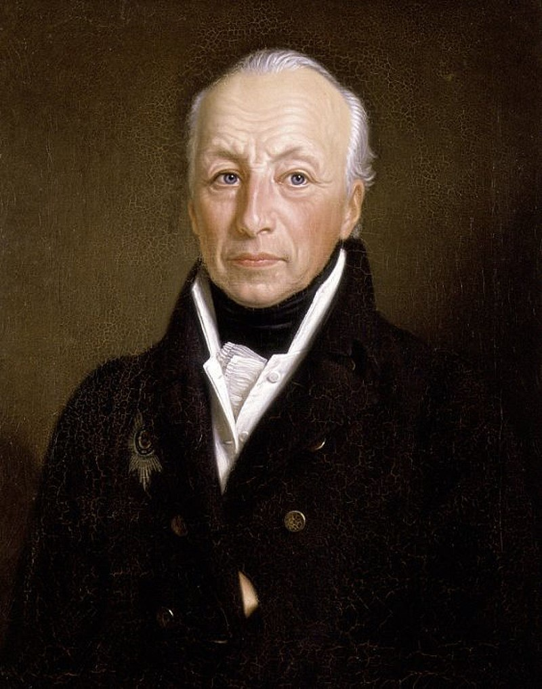

В 1807 г. по итогам войны между Францией и четвёртой антифранцузской коалицией, куда входила и Россия, Александр I и Наполеон заключили Тильзитский мир. По его условиям Россия должна была присоединиться к континентальной блокаде Великобритании и получала право отвоевать у Швеции Финляндию, чем она воспользовалась в 1808 г.. Франция же могла продолжать завоевательные действия в Европе, что она и сделала, присоединив австрийские земли и придвинувшись вплотную к границам Российской империи. Условия Тильзитского мира считаются унизительными для России даже не из-за потери важного торгового партнёра в лице Англии, а из-за того, что она была вынуждена отступить на второй план, потеряв роль одного из ведущих европейских государств. Уже в 1807 г. было понятно, что это не последний военный конфликт между Россией и Францией. С другой стороны, нашей стране нужна была передышка для того, чтобы восполнить потери после войны в составе третьей антифранцузской коалиции, закончить войны с Турцией и Ираном.
Обе стороны нарушали условия договора. Россия торговала с Англией через посредников, о чём Франция, конечно, знала. Наполеон создал из земель бывшей Речи Посполитой Великое герцогство Варшавское, и старательно поддерживал там реваншистские настроения, подбивая поляков отобрать у России Белоруссию и Литву, чтобы восстановить Польшу в прежних границах. Помимо этого, по условиям Тильзитского мира Наполеон должен был освободить от оккупации Пруссию, но не стал делать это.
Были у обоих императоров и личные обиды. На северо-западе Германии находилось крошечное государство — герцогство Ольденбургское. Его правитель князь Пётр I Фридрих Людвиг Ольденбургский был женат на родной тётке Александра I.

В 1810 г. Наполеон захватил герцогство, а князя с семьёй выдворил за его пределы. Этот поступок вызвал негодование российской императорской семьи. Наполеон же дважды получил отказ, сватаясь к сёстрам Александра I.
Чувства были ни при чём — самопровозглашённому императору нужно было породниться с какой-нибудь европейской августейшей семьёй, чтобы к происхождению его потомков не было вопросов. Но Романовым идея выдать великую княжну за сына адвоката с Корсики не показалась привлекательной. Уязвлённый Наполеон женился на дочери австрийского императора. В начале 1812 г. Франция заключила военные соглашения с Австрией и Пруссией. Россия же заключила договор со Швецией. Франция собрала армию, насчитывавшую до 600 тыс. человек. Российские историки называли её «нашествие двунадесяти языков», потому что французов в ней было меньше половины, а бо́льшую часть составляли немцы, поляки, португальцы, литовцы, испанцы, итальянцы — всего более 16 национальностей.
Изначально Наполеон не хотел уничтожать Россию — он хотел заставить Александра I выполнить его условия: прекратить торговлю с Англией и участвовать в походе в Индию, вернуть Польше Белоруссию и Литву. Французский император был уверен, что для этого хватит одного-двух сражений на западных рубежах России.
Русская армия насчитывала до 500 тыс. человек. У России было несколько вариантов ведения войны, в том числе наступательный: захватить польские и прусские земли, не дожидаясь нападения Наполеона. Впрочем, Александр I отдал предпочтение другому варианту: русская армия делится на три части, центральная отступает, увлекая за собой французов, а две другие заходят с флангов и берут Наполеона в кольцо. Как мы уже знаем, война 1812 г. не пошла ни по русскому, ни по французскому сценарию.
Таким образом, война между Россией и Францией была предопределена ещё Тильзитским соглашением 1807 г., которое обе стороны не соблюдали. Наполеон осуществлял в Европе агрессивную захватническую политику, ущемляя интересы России. Тем не менее, строя планы на кампанию 1812 г., Наполеон не ставил перед собой цель уничтожить Российскую империю.